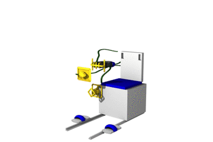

Ready to Start
Adopt the seated posture in the GRIP Chair.
Attach Chest Marker Support to the Chair Belt Junction and verify that it is well centered left-to-right on your chest.
Place the Virtual Reality Headset on your forehead in preparation for performing science tasks.
Pass your right forearm through the strap on the Hand Marker Support cable and tighten near the elbow.
Attach the Hand Marker Support to your right hand with your palm against the flat side of the paddle.
Take the VR Headset Remote in your left hand.

Pull the Virtual Reality Headset over your eyes then press the Return Button on the VR Headset Remote to begin.